4. 建立工程¶
本章节教大家创建一个STM32的工程。
开发环境使用MDK，也即是Keil。
本文档只做概要说明，详细操作请参考视频教程
4.1. 安装¶
自己网上寻找安装方法。
安装完成后，双击图标打开主界面如下。
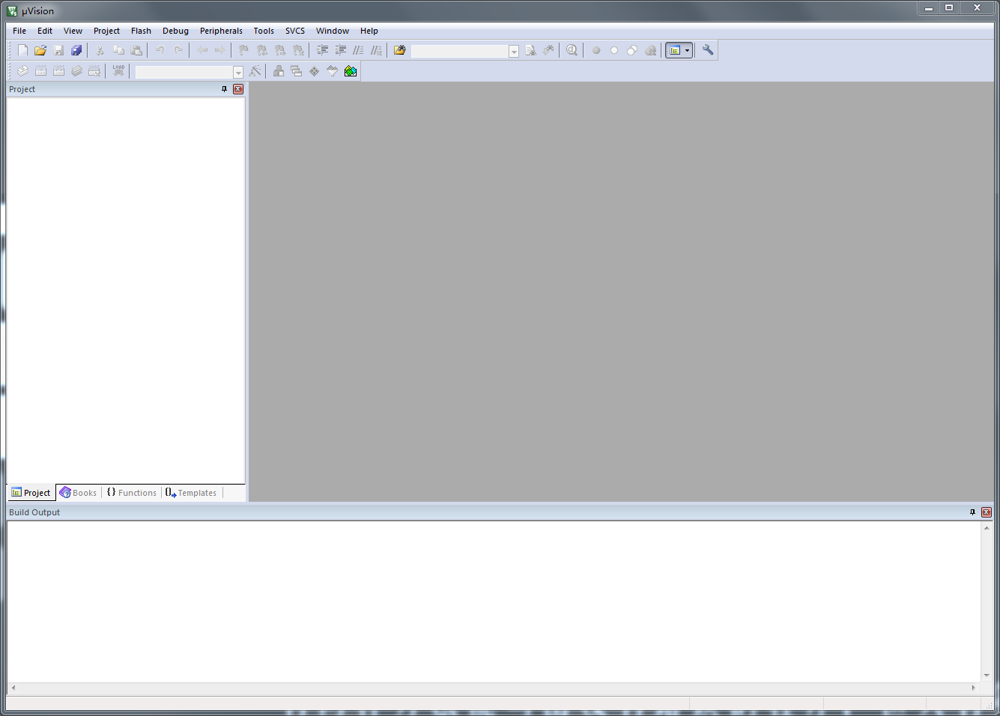
点击菜单栏的Help->About uVision，可以查看到版本信息，我使用的是V5.24.2.0。
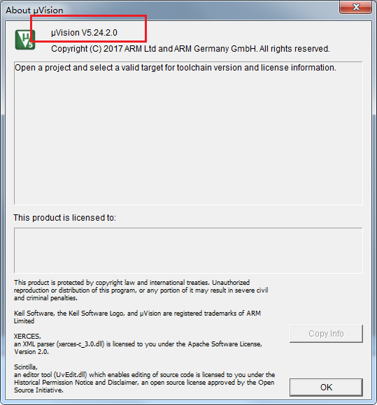
创建工程之前我们先配置IDE环境，
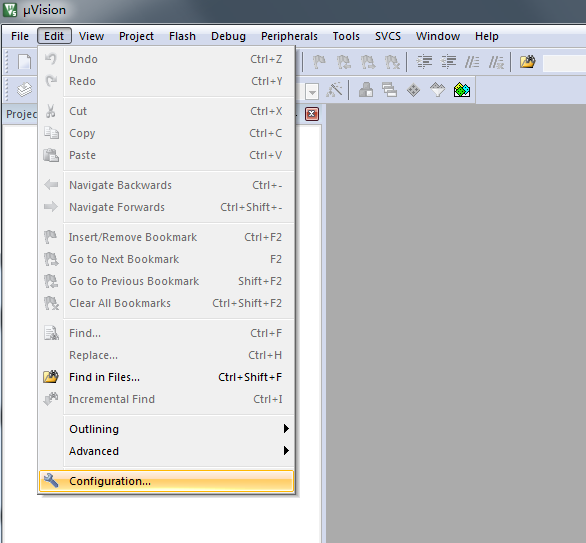
在Configuration的Editor页中，把Automatic reload of externally modified files
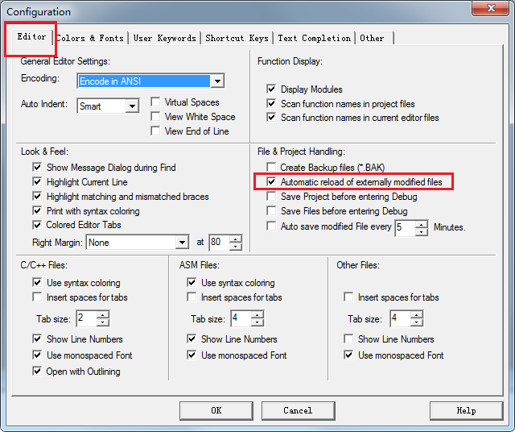
点击Project中的New uVision Project 创建新工程
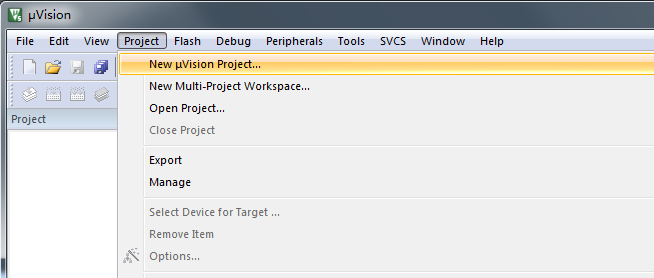
选择芯片STM32F103VE
如果MDK是刚刚装好，在芯片中只有ARM内核，没有我们需要的芯片。
直接双击ARM核，选择下载芯片列表。
同时还需要下载对应芯片的支持包。 待补充

弹出界面让我们选择软件包，我们都不是使用这些软件库。点击OK跳过。

创建完成，现在得到一个空的工程。

查看目录，现在只有工程文件，没有代码文件。

在目录中创建一个mcu文件夹。
把STM32F10x_StdPeriph_Lib_V3.5.0\Libraries下的STM32F10x_StdPeriph_Driver文件夹拷贝到mcu目录 名字太长，改为stdlib
拷贝STM32F10x_StdPeriph_Lib_V3.5.0\Project\STM32F10x_StdPeriph_Examples\GPIO\IOToggle 中的文件到mcu目录
拷贝STM32F10x_StdPeriph_Lib_V3.5.0\Libraries\CMSIS\CM3\DeviceSupport\ST\STM32F10x 中的源文件 拷贝启动代码，注意选对编译工具和型号 STM32F10x_StdPeriph_Lib_V3.5.0\Libraries\CMSIS\CM3\DeviceSupport\ST\STM32F10x\startup\arm
待补充

回到MDK
先选中目标名，再单击，修改为stm32_tech
同样修改源文件目录名
然后右键点击mcu，将刚刚拷贝到mcu目录的文件添加到工程的mcu下。
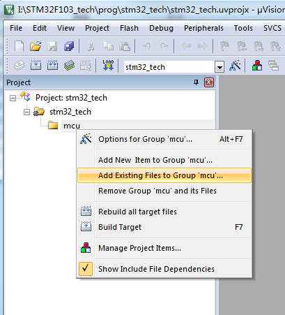
添加文件，添加启动代码的时候要注意，文件类型要选为ALL，才能看到汇编文件。
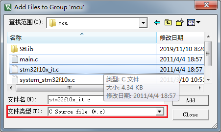

新建一个Stlib的文件夹，把库文件全部添加

点击编译，在下方框中输出编译过程的信息，编译结果显示24个错误。错误都是提示找不到.h文件。
原因是我们没有添加头文件存放的路径。
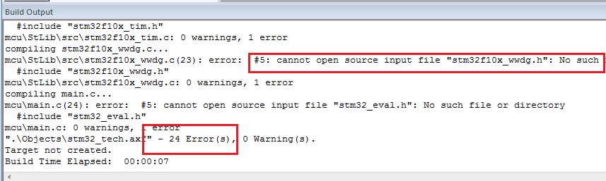
点击魔术棒进入Option，开始配置工程。
首先将晶振修改为8M

在Output页中勾选如下，选择生成hex文件。

在C/C++页中，勾选上C99，并且将头文件存在的路径添加到Include Paths中。

点击工程目录树中，找到stm32f10x.h，在65开始的地方，默认没有定义任何类型的芯片，我们要定义一个芯片。
有些库文件时只读，在图标上面有一个钥匙标志，需要先修改文件属性才能修改。

在这个文件的105行，打开这个宏，选择使用标准库。
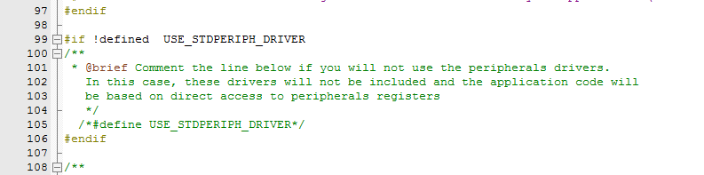
编译，错误，原因是我们没有忘记添加启动文件了。

添加启动文件，文件类型要选择为ALL files才能选中汇编文件。

编译通过。
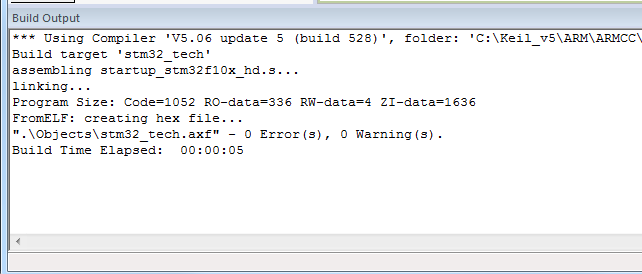
4.1.1. 下载¶
在工程Option中，Debug页，右上角，选择调试器，默认是ULINK2……，我们选在CMSIS-DAP。

硬件连接正确的情况下，点击Settings，可以读到芯片。

回到主界面，点击Debug，开始调试。

进入调试后界面如下。
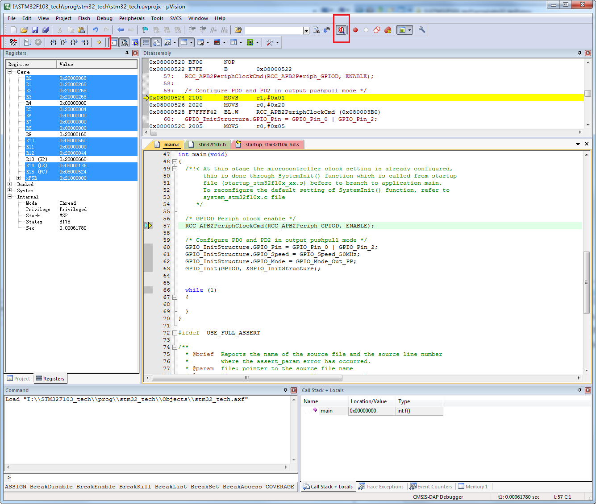
左键点击行号旁边可以添加断点，黄色三角符号是当前执行位置。
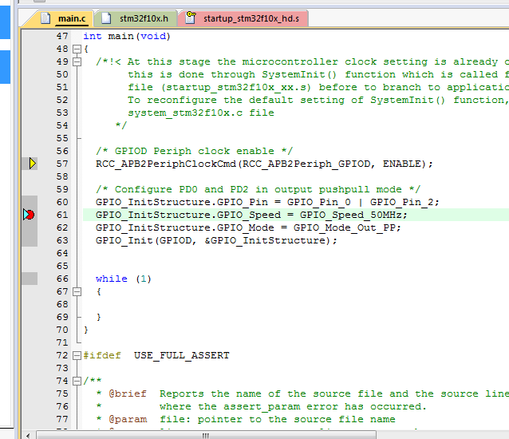
各种调试按钮在菜单栏。

20200109
end